IMAGES

Une ruelle entre les cases de la ville (Pointe-à-Pitre 1966).

Pointe-à-Pitre après le passage de l'ouragan Inez, 1966.
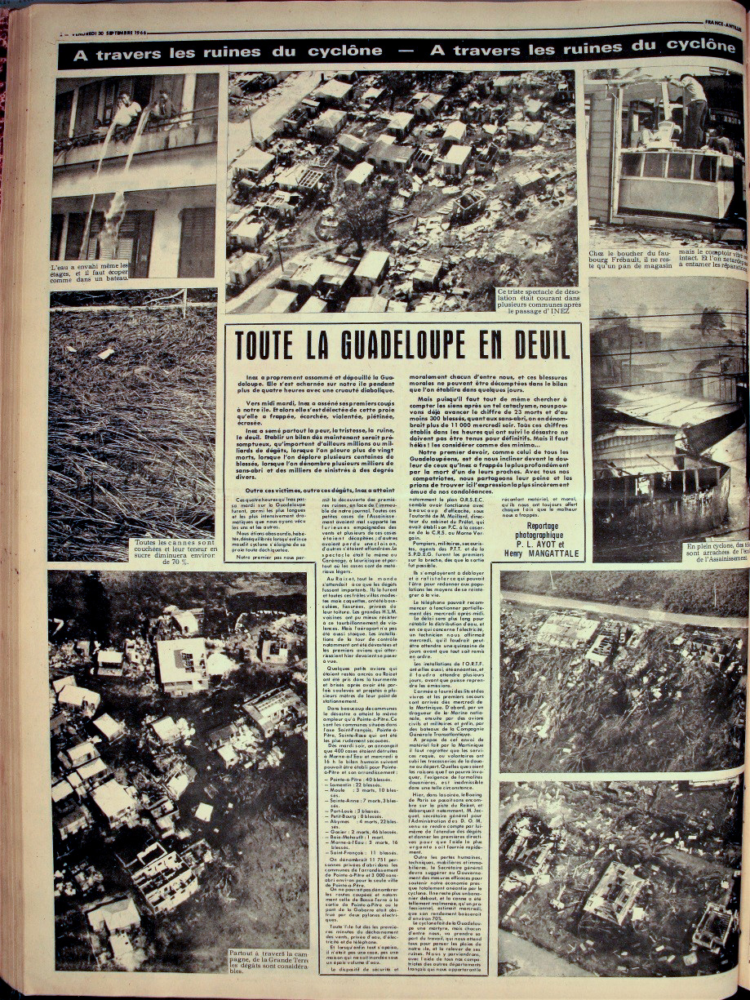
Journal France-Antilles du 30 septembre 1966, relatant les dégâts causés par l'ouragan. On y lit : « Inez a proprement assommé et dépouillé la Guadeloupe. Elle s'est acharnée sur notre île pendant plus de quatre heures avec une cruauté diabolique. »

Une du journal France-Antilles du 30 septembre 1966.

29 septembre 1966, Pointe-à-Pitre, Guadeloupe. Une maison gît, renversée à un angle improbable, après le passage de l'ouragan Inez, qui a ravagé l'île. Au moins 23 personnes ont trouvé la mort et 10 000 habitants se sont retrouvés sans abri.

Journal France-Antilles du 30 septembre 1966, relatant les dégâts causés par l'ouragan.
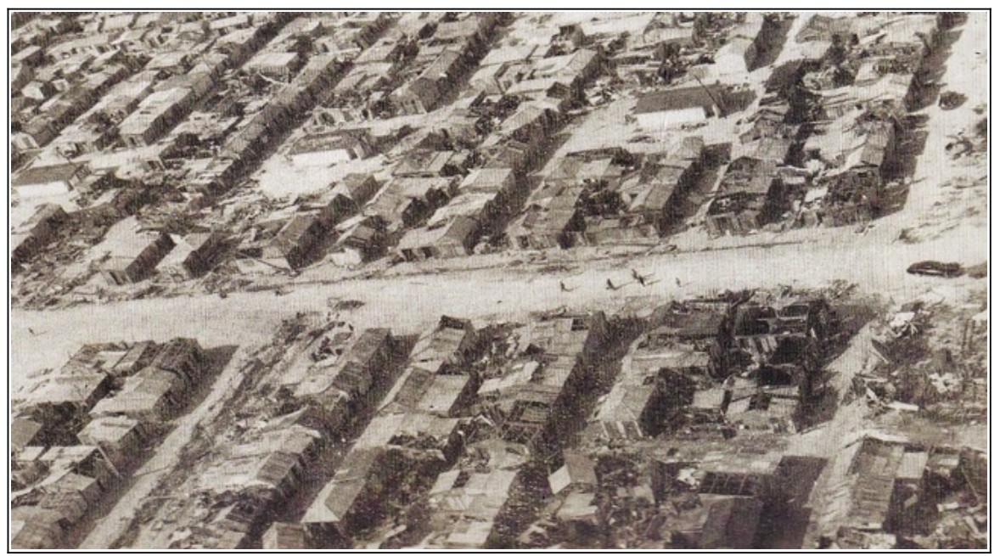
Vue aérienne de Pointe-à-Pitre après le passage de l'ouragan.
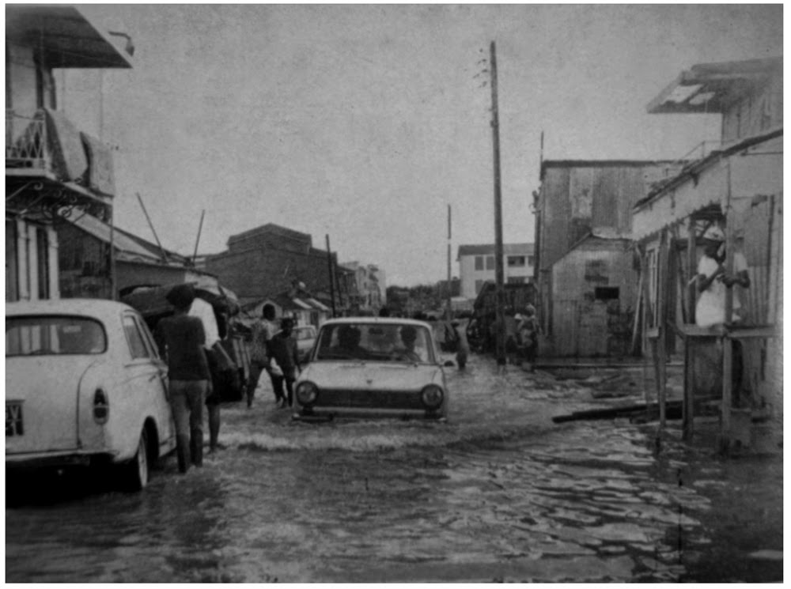
Une rue de Pointe-à-Pitre inondée après le passage de l'ouragan Inez, 1966.
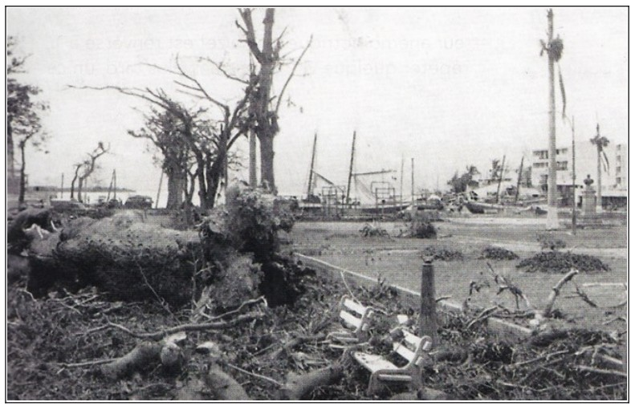
Place de la Victoire à Pointe-à-Pitre après le passage de l'ouragan Inez, 1966.
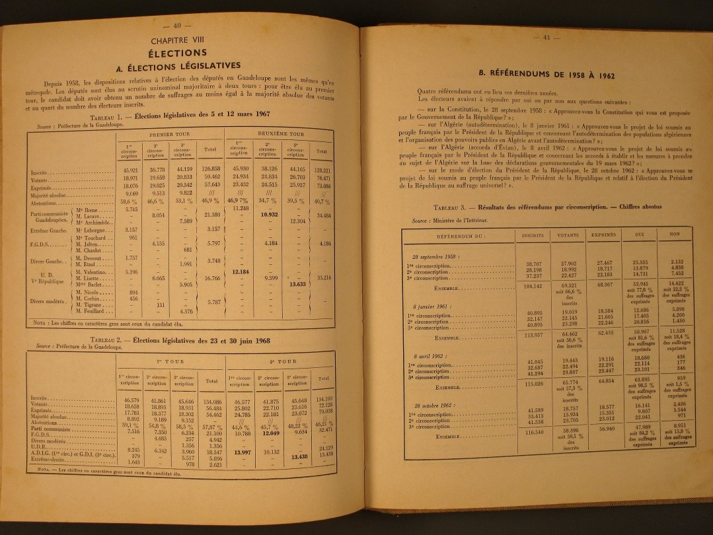
Résultats des élections législatives de 1967.
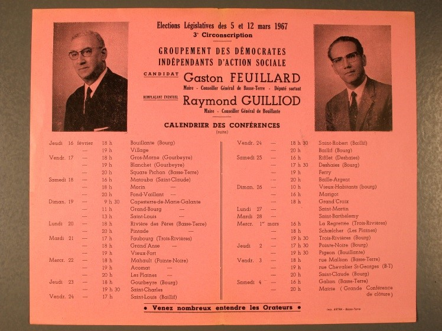
Tract de campagne de Gaston Feuillard, candidat du groupement des démocrates indépendants d'action sociale de la 3e circonscription de Guadeloupe aux élections législatives de 1967.
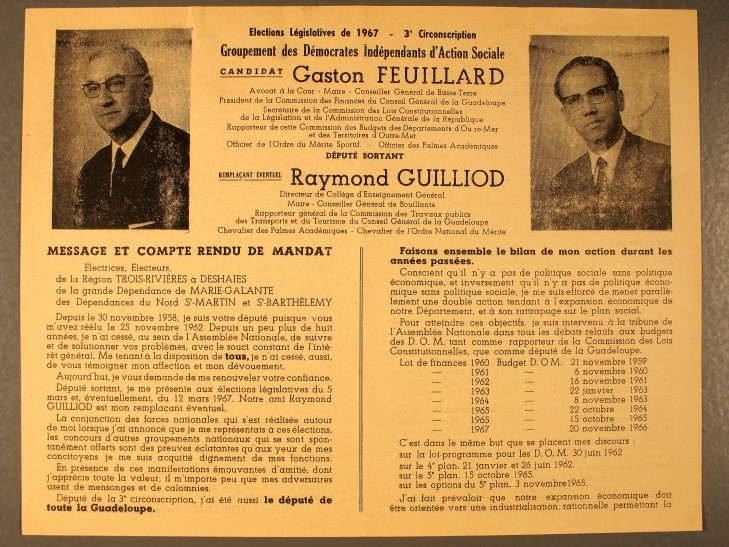
Tract de campagne de Gaston Feuillard, candidat du groupement des démocrates indépendants d'action sociale de la 3e circonscription de Guadeloupe aux élections législatives de 1967.
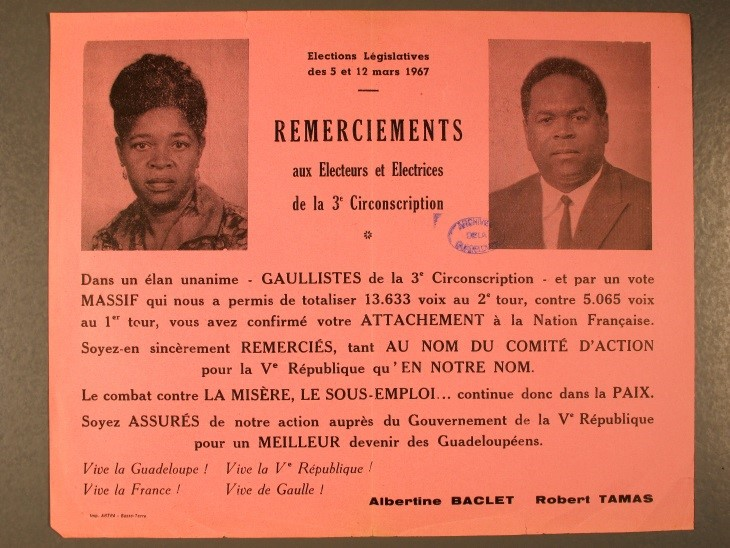
Remerciements de Albertine Baclet, candidate Gaulliste élue députée de la 3e circonscription de Guadeloupe aux élections législatives de 1967.
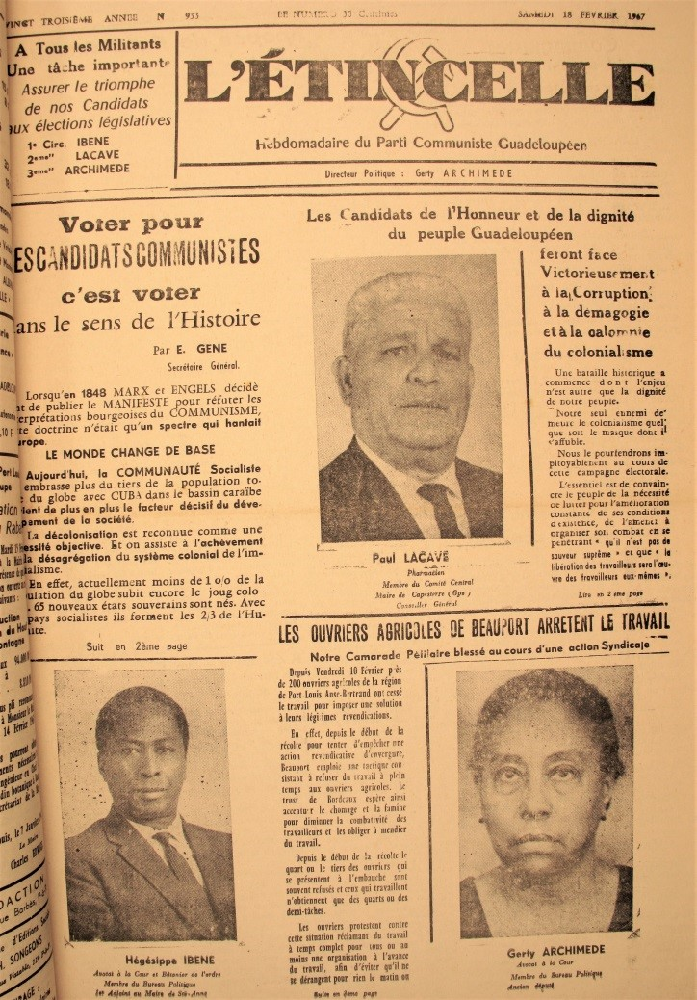
Une du journal L'étincelle du 18 février 1967.
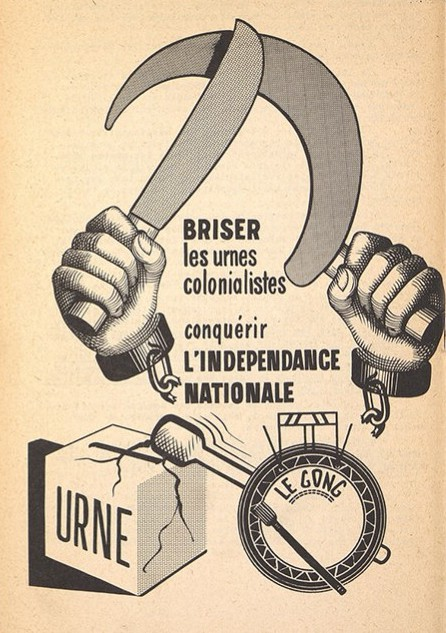
Affiches du Groupe d'organisation nationale de la Guadeloupe (GONG) pour contester les procès jugés abusifs intentés à leurs membres après les événements de 1967, 1968.
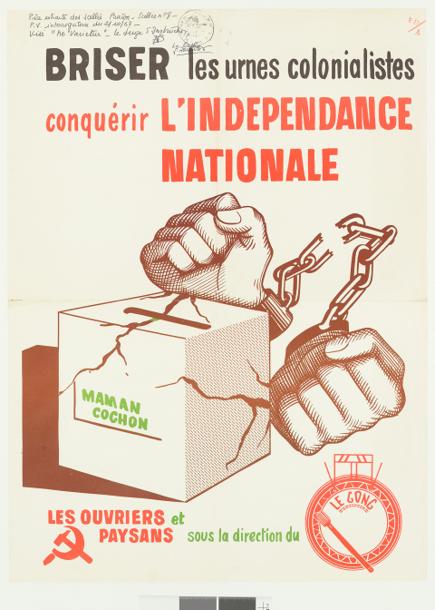
Affiches du Groupe du GONG pour contester les procès jugés abusifs intentés à leurs membres après les événements de 1967, 1968.

Boulevard du Gouverneur Félix Éboué (anciennement Nouvelle Avenue) à Basse-Terre, 1948.

Carte postale de Basse-Terre, date inconnue.

Rue Maurice Marie-Claire à Basse-Terre, 1963.
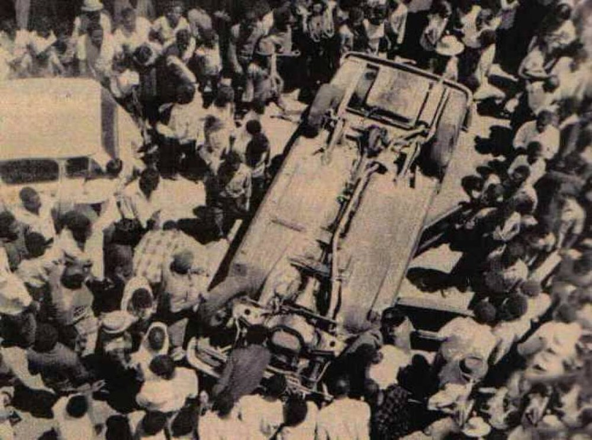
Plusieurs centaines de personnes détruisant les véhicules de Vladimir Srnsky avant de les jeter à la mer, 1967.
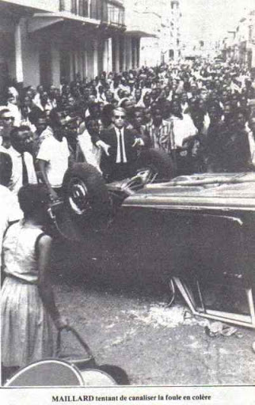
Guy Maillard, alors sous-préfet de la Guadeloupe, tentant de canaliser la foule en colère, 1967.

Une du n°203 du journal France-Antilles du 23 mars 1967.
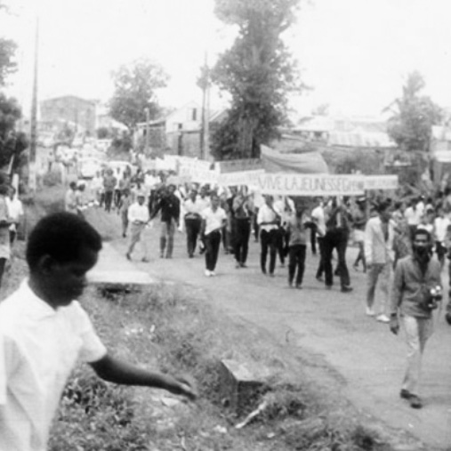
Foule de manifestants arpentant les rues de Pointe-à-Pitre, 1967.
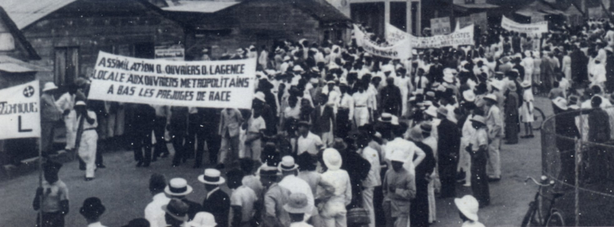
Foule de manifestants arpentant les rues de Pointe-à-Pitre, 1967.

Jacques Nestor, militant syndical et première victime connue du massacre de mai 1967.
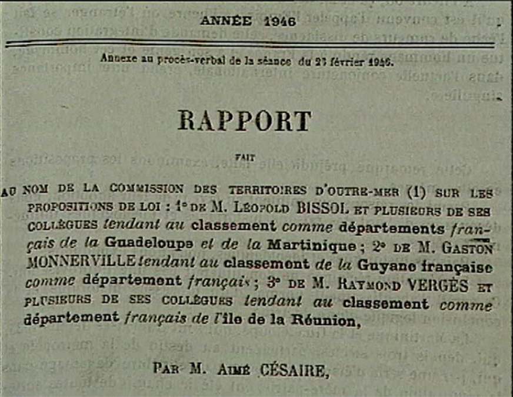
Loi n° 46-451 du 19 mars 1946 tendant au classement comme département français de la Guadeloupe, de la Martinique, de la Réunion et de la Guyane française.